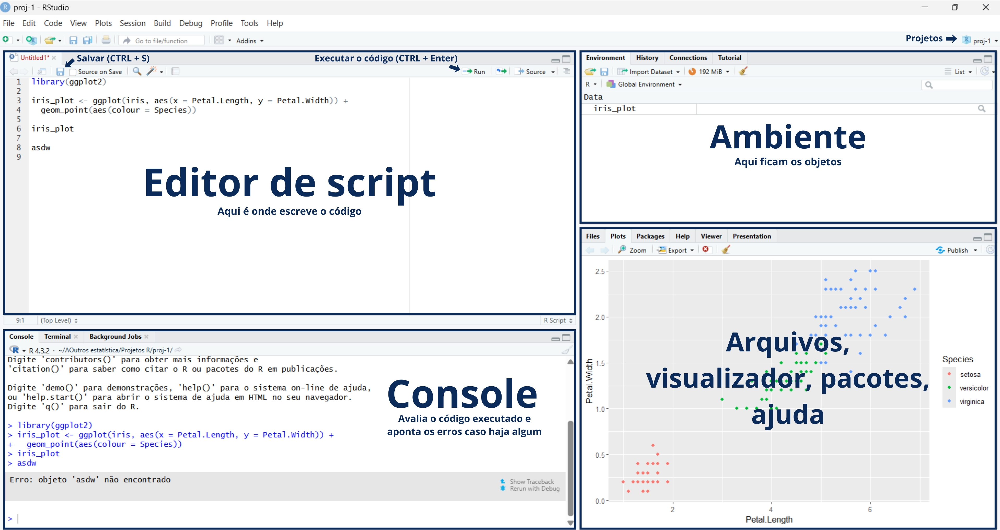
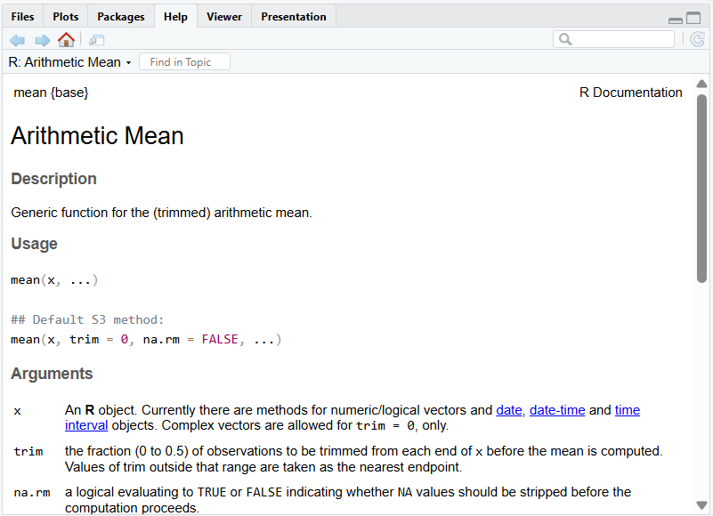
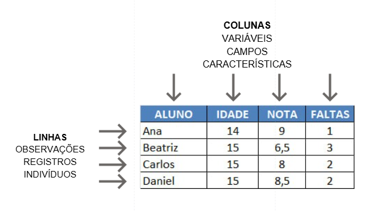

?meanPrimeiros passos no R
Pense em uma ferramenta que ajuda você a transformar dúvidas em respostas com base em dados, seja para entender o efeito de uma vacina em uma população, acompanhar o aumento de casos ao longo do tempo ou comparar quantas pessoas melhoraram após um tratamento. No começo pode parecer confuso, com telas, códigos e termos novos. Mas é assim que você começa a sair do “achismo” e passa a entender os problemas de saúde com mais clareza, precisão e base científica.

Ajuda
Caso tenha dúvida em qualquer função, basta digitar ? antes da função no console, conforme o exemplo abaixo com a função mean (utilizada para obter a média de vários números).
Na guia help, no canto inferior direito, irá aparecer as informações de como utilizar a função.

# quanto é dois mais dois? <--- comentário
2 + 2 # <--- código
#> Abaixo, o resultado impresso no console[1] 4
NotaPrática 1.01: Entendendo a interface e os comandos
No Editor de script, digite manualmente o comando abaixo e execute linha por linha para compreender a lógica de execução do R. Observe como cada comando gera uma saída no Console, como os objetos criados aparecem no Ambiente/Environment, o comando ?plot abre a guia Help e o gráfico aparece no Plots.
# console e resultado
2 + 2
10 * 5
# criando objetos (aparecem no Environment)
idade <- 68
nome <- "Maria"
idade
nome
# abrindo o Help
?plot
# gerando um gráfico simples (aparece no Plots)
alturas <- c(1.55, 1.62, 1.70, 1.58, 1.75)
plot(alturas)Sugestão: Execute cada bloco separadamente, observando o que muda em cada painel do RStudio. Perceba que linhas com # são comentários e o R as ignora na execução.
Acessar bancos de dados em diretórios diferentes
Observe a seguinte estrutura de arquivos:
/
├── Downloads/
│ ├── dados_1.csv
│ └── Pasta/
│ └── dados_2.csv
│
└── Documentos/
└── dados_3.csvPara executar os 3 bancos de dados, é preciso fazer:
dados_1 <- read.csv('Downloads/dados_1.csv')
dados_2 <- read.csv('Downloads/Pasta/dados_2.csv')
dados_3 <- read.csv('Documentos/dados_3.csv')Acessar bancos de dados em um diretório de trabalho
Mas se estiverem organizados todos no mesmo arquivo, como abaixo:
/
├── Downloads/
│ └── Pasta/
│ └── dados_1.csv
└── dados_2.csv
└── dados_3.csvPode-se usar a função setwd() para definir o diretório de trabalho, e getwd() para verificar qual é o diretório atual.
setwd('Downloads/Pasta')
dados_1 <- read.csv('dados_1.csv')
dados_2 <- read.csv('dados_2.csv')
dados_3 <- read.csv('dados_3.csv')
getwd()
#> [1] "C:/Users/Computador/Downloads/Pasta"Criar um projeto
Uma forma simples e prática de organizar seu trabalho no R é usando projetos. Com eles, você mantém tudo do mesmo trabalho em um só lugar: dados, códigos e outros arquivos.
Além disso, o projeto “lembra” como você deixou seu trabalho. Quando você abre o projeto, no canto superior direito do RStudio, (veja a figura da Interface do RStudio), os scripts que estavam abertos na última vez aparecem de novo automaticamente. Assim, você pode continuar exatamente de onde parou, sem precisar procurar tudo de novo.
/
├── Downloads/
│ └── Projeto/
│ ├── projeto.Rproj
│ ├── script-1.R
│ ├── script-2.R
│ ├── README.md
│ ├── .gitignore
│ └── Dados/
│ ├── dados_1.csv
│ ├── dados_2.csv
│ └── dados_3.csvdados_1 <- read.csv('Dados/dados_1.csv')
dados_2 <- read.csv('Dados/dados_2.csv')
dados_3 <- read.csv('Dados/dados_3.csv')
NotaPrática 1.02: Criando seu primeiro projeto
Abra o RStudio e crie um projeto chamado “introducao-ao-r” na pasta “Documentos”. Em seguida, baixe estes arquivos e exporte na pasta “Documentos/introducao-ao-r”.
Sugestão: Vá em File, depois em New Project…. Aparecerá uma janela flutuante. Nela, você irá em New Directory, New Project, preencherá o campo Directory name: com “introducao-ao-r” e para o campo Create project as subdirectory of: irá selecionar a pasta “Documentos”. Por fim, basta pressionar o botão Create Project.
Um banco de dados estruturado geralmente é organizado no formato de uma tabela. Nesse formato, existem diferentes formas de nomear suas linhas e colunas, dependendo do contexto:
Linhas → Colunas
Observações → Variáveis
Registros → Campos
Indivíduos → CaracterísticasApesar dos nomes variarem em diferentes contextos, a ideia é sempre a mesma: as linhas representam os elementos observados, enquanto as colunas representam as informações sobre esses elementos.

Nesse curso, utilizaremos a notação de Variáveis e Observações. O termo variável também aparecerá fora do contexto de tabelas: sempre que tivermos uma sequência de valores de um mesmo tipo, chamaremos isso de variável também.
O R é uma linguagem de código aberto, mantida e expandida por uma comunidade ativa de desenvolvedores ao redor do mundo. Uma das principais formas de contribuição é através de pacotes: conjuntos de funções prontas feitas para resolver problemas específicos. No exemplo abaixo, foi instalado o pacote readxl, utilizada principalmente para importar arquivos .xlsx. A instalação é feita somente uma vez. Enquanto a execução precisa ser feita antes de executar as funções do pacote.
# instalar o pacote
install.packages("readxl")
# executar o pacote
library(readxl)
NotaPrática 1.03: Instalando seus primeiros pacotes
O R possui uma infinidade de pacotes para as mais diversas situações. Copie o código abaixo e execute função por função. Depois, tente alterar a cor “steelblue” para “#4A90D9” e execute novamente para ver a diferença.
OBS: Este código exige um alto nível de compreensão dos pacotes
ggplot2edplyr, clássicos para construção de gráficos e manipulação de dados, respectivamente. Eles não serão abordados no curso e sua presença aqui é apenas para entender como o R permite uma ampla personalização.
# instalar os pacotes (apenas uma vez)
install.packages("ggplot2")
install.packages("dplyr")
# carregar os pacotes
library(ggplot2)
library(dplyr)
# construção de dados fictícios de uma população
populacao <- data.frame(
faixa_etaria = rep(c("0-9","10-19","20-29","30-39","40-49",
"50-59","60-69","70-79","80+"), 2),
sexo = rep(c("Masculino","Feminino"), each = 9),
n = c(820, 750, 690, 710, 680, 600, 430, 280, 120,
790, 720, 710, 730, 670, 620, 460, 310, 150)
)
# geração de gráfico de pirâmide etária
populacao %>%
mutate(n = ifelse(sexo == "Masculino", -n, n)) %>%
ggplot(aes(x = faixa_etaria, y = n, fill = sexo)) +
geom_col() +
coord_flip() +
scale_y_continuous(labels = abs) +
scale_fill_manual(values = c("Feminino" = "#E07B8A", "Masculino" = "steelblue")) +
labs(
title = "Pirâmide etária — População fictícia",
x = "Faixa etária",
y = "Número de indivíduos",
fill = "Sexo"
) +
theme_minimal(base_size = 13) +
theme(
plot.title = element_text(hjust = 0.5, face = "bold"),
legend.position = "bottom",
panel.grid.minor = element_blank()
)